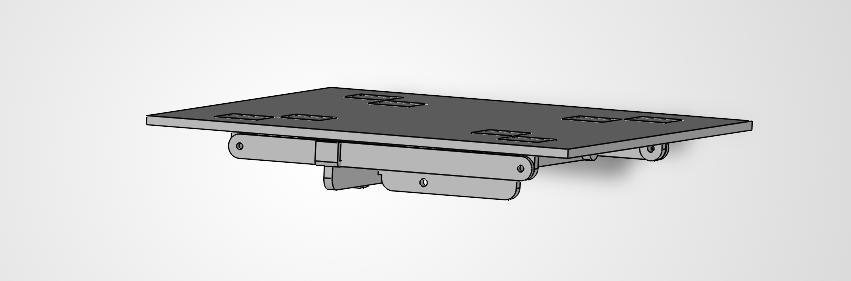
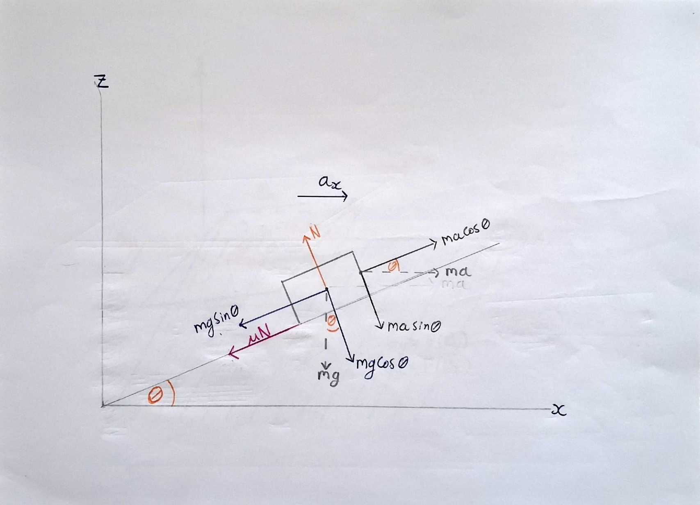
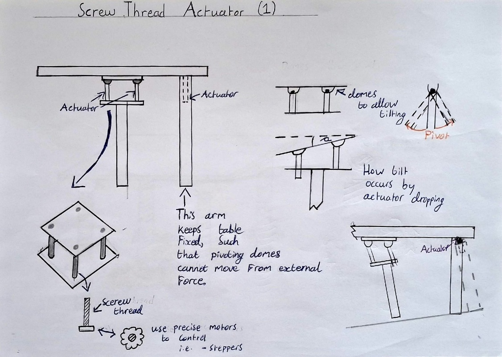
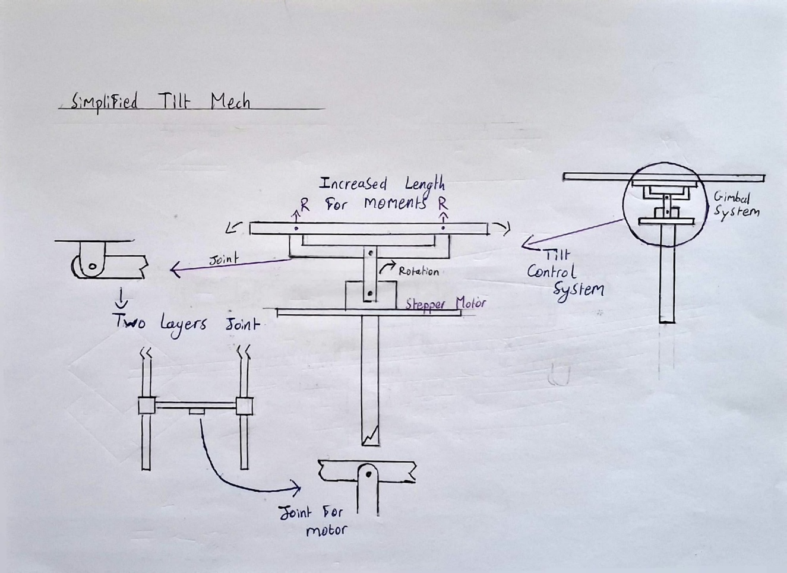
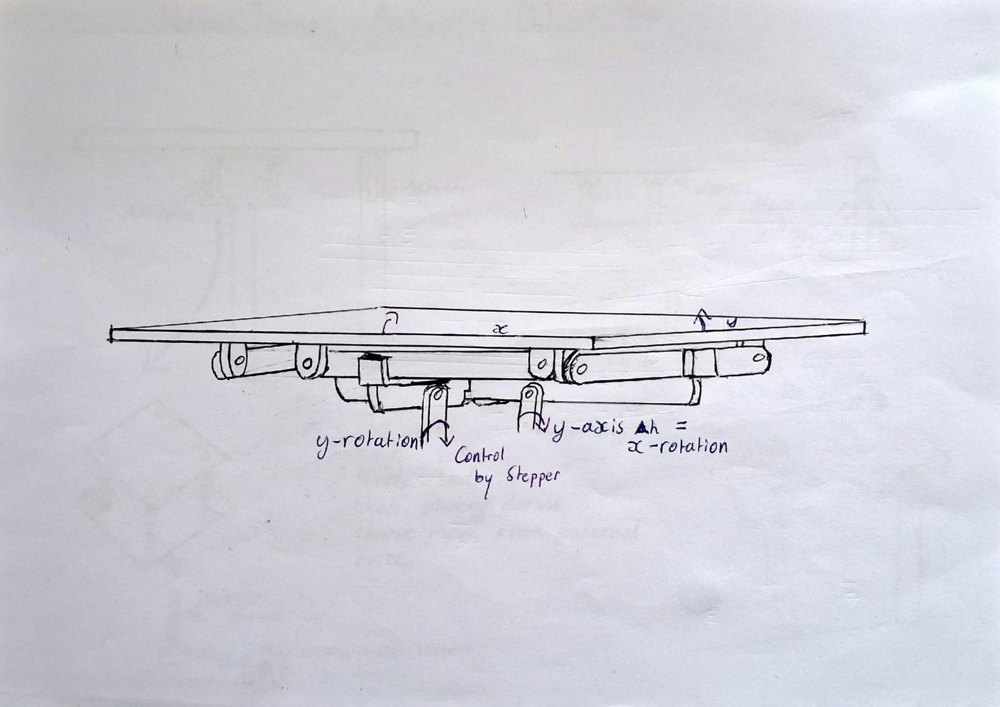
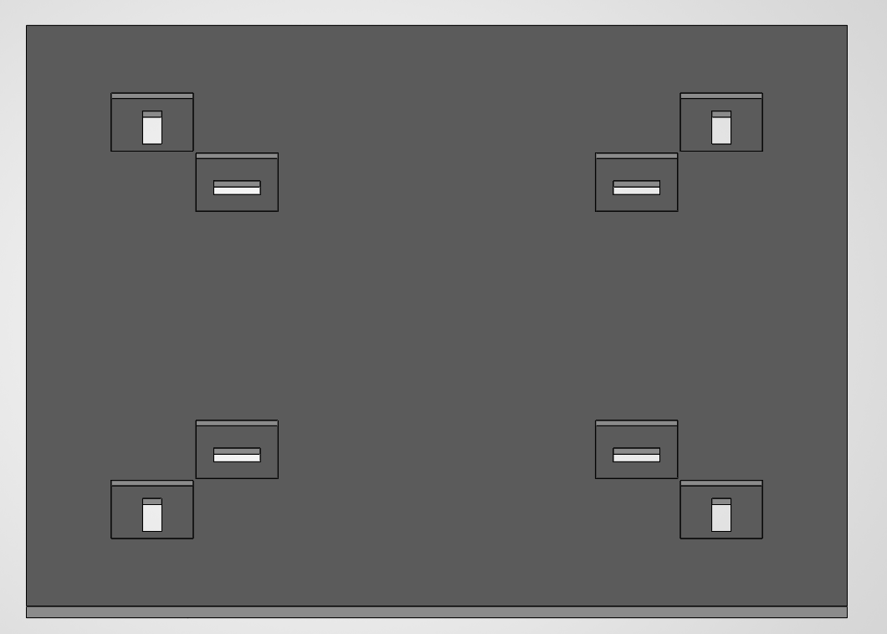

Self-Stabilising Table
A two-axis platform that senses acceleration and moves beneath an object to keep it level.

The idea began on a bus, when a sharp turn sent a coffee cup sliding from the table. It led to a practical investigation of gimbal-like systems: if the platform could detect and respond to vehicle motion quickly, it could tilt beneath the supported object to keep it stable.
The project was designed around three core requirements: sensing motion in multiple axes, calculating the required tilt, and moving the platform quickly and precisely. It became an exercise in mechatronics rather than a purely theoretical gyroscope project.
How the control system works

An MPU6050 six-axis sensor provides acceleration and angular-rate data to an ESP32 microcontroller. The controller calculates the orientation correction and sends synchronized step and direction signals to the two motor drivers.
Two NEMA 23 stepper motors drive the X and Y axes through a gear and linkage arrangement. TMC2209 drivers provide quieter, controllable stepper operation, while the power system separates logic and motor supplies to improve stability.
Mechanical development

Prototype 1: screw-thread actuation
The first mechanism used screw-thread actuators to raise and lower parts of the platform. It was useful for testing the geometry, but the arrangement had slow response and limited the platform's ability to react to rapid changes.
This led to a more direct tilting mechanism in which each axis has its own stepper-controlled joint. The revised layout provides more useful torque, faster movement and independent X/Y control.



Validation and testing
Real bus acceleration measurements were used to understand the motion the table needed to handle. Data collection focused on large acceleration changes over short periods, helping define a control target rather than relying only on idealised movement.
The final design targets rapid angle corrections while maintaining structural stability. Mechanical stiffness, motor torque, sensor response and software timing are all considered together so that the platform can act quickly without introducing excessive vibration.
System architecture
- Platform: rigid table surface, MPU6050 sensor and detachable brackets.
- Actuation: NEMA 23 motors, timing-belt gearing and independent X/Y mechanisms.
- Control: ESP32 reads sensor data and controls TMC2209 motor drivers.
- Power: regulated control supply with motor-power isolation and cooling.
Project files
Selected neutral STL components are available for inspection: